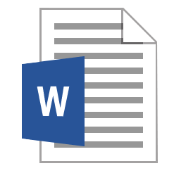
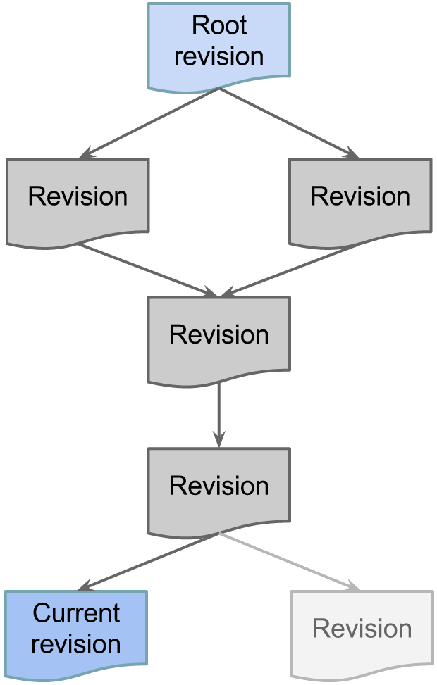
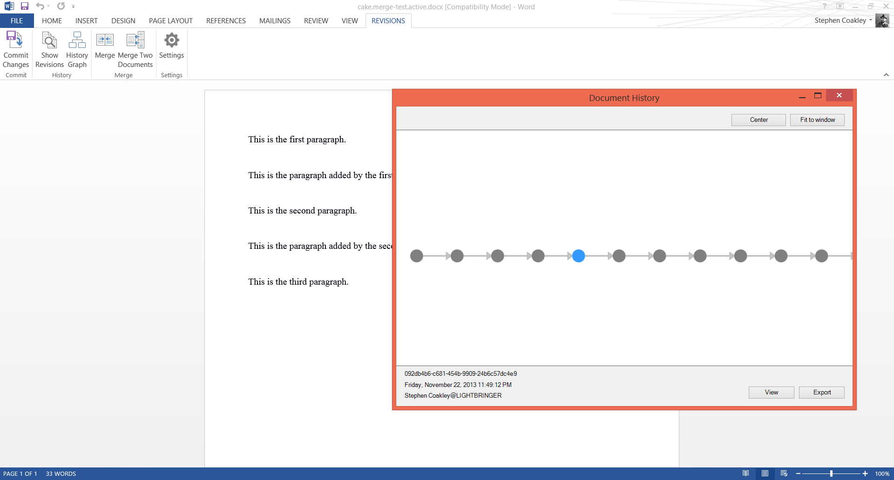
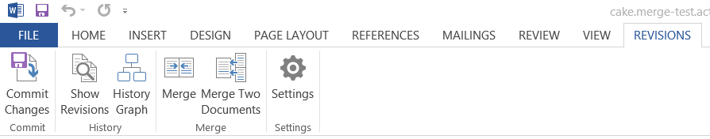

Your browser doesn't support the features required by impress.js, so you are presented with a simplified version of this presentation.
For the best experience please use the latest Chrome, Safari or Firefox browser.

Version-Aware Word Documents
A research project sponsored by the University of Wisconsin-Whitewater
What are Version-Aware Word Documents?
The goal of version-aware Word documents is to facilitate:
- Keeping track of multiple changes to a document
- Keeping track of authors of each change
- Merging changes from multiple authors to one document
Why yet another solution?
- Google Docs requires a central server or an Internet connection
- Version control systems are too complex for average users
- Microsoft Office's track changes feature is limited at best
Our solution plugs in to the commonality of Word and provides a more complete system:
- Allows collaborators to work on documents concurrently
- Allows collaborators to create versions to keep track of changes
- Allows collaborators to combine their changes to create a new version
- Allows collaborators to view the history of the document
Revision history

- Stored as a directional graph
- Contains a root and a current leaf
- Root is the first revision
- Current is the most recent revision
- Each revision contains the document at that point
- Entire graph is only visible when all branches merge
What a document revision contains
- A globally unique ID
- The author of the revision
- References to what revisions it descended from
- The document content as it existed when the revision was made
- Revision comments from the user
Creating revisions
- An author makes some changes to the document
- The author commits the changes
- A snapshot of the current document data is saved to the revision history
Merging two documents
- A new revision is created with two parents
- Content from both revisions is merged together based on changes from a common ancestor
- Three-way XML merge performed using 3DM www.cs.hut.fi/~ctl/3dm/
Visualizing document history
- Collaborators of a document can view the history of the document by viewing past revisions
- Ideal way is to visualize by a graph
- Early work on a graph has been done

Implementation
- Revision history is stored inside the Word document file
- A Microsoft Word add-in allows collaborators to work with a document’s history
- Merging is done with a Java module (github.com/Jacob-Mischka/Vvord)
About the add-in

- Adds an easy-to-use ribbon tab for actions
- Displays revisions in a visual graph or in a sidebar
- Provides a simple interface for commiting changes as a new revision
Revision history is stored in XML and includes revision relations and the location where content changes are stored inside the file
<?xml version="1.0" encoding="utf-8"?>
<revision-history xmlns="http://www.cs.uwm.edu/molhado/revision-history"
current="24f50581-38ba-46ae-839d-14d8b8f4e0f4">
<revision id="e37bbc3f-e056-4259-a081-5ae7f2c8153e"
author="john@domain"
timestamp="2013-11-23T09:36:49"
location="/history/e37bbc3f-e056-4259-a081-5ae7f2c8153e">
</revision>
<revision id="24f50581-38ba-46ae-839d-14d8b8f4e0f4"
author="john@domain"
timestamp="2013-11-23T09:38:46"
location="/history/24f50581-38ba-46ae-839d-14d8b8f4e0f4">
<parent id="e37bbc3f-e056-4259-a081-5ae7f2c8153e" />
</revision>
</revision-history>
Current limitations
- Themes and styles not preserved over merge
- Doesn’t work with other office suites
- Merge requires common ancestor
- Merge requires Java Runtime
- Merge success reliant on 3DM
- Merge reliant on external libraries
- JARs must be manually downloaded
Future possibilities
- Include merge tool within addon natively
- Create an installer that installs everything automatically
- Create a portable comment and review system attached to each revision
- Allow version-aware documents to be transferred around at the click of a button